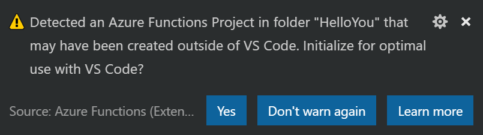

This is Step 2 in a series of posts where I will walk you through the steps required to create a simple Azure Function using F# Script, VS Code, and v1 of the Azure Functions Core Tools. I’ll cover everything from what you need to install, all the way through creating the function, and deploying it to your Azure account.
- Setup Your Environment
- Create the Function App ◀️
- Run the Function Locally
- Deploy the Function App to Azure
Create the Function App Link to heading
Alright, you’ve got all the tools you need to do some kickass F# development. Let’s start coding!
As I mentioned earlier, the Azure Functions extension doesn’t support creating F# Function Apps in Visual Studio Code. So we’ll create the project using the CLI and the Azure Functions Core Tools.
Open up your favorite console, and create a new directory for your project. I’m gonna call mine something really lame fun like HelloYou, then I’ll cd into it and run func init. You can also do this in one shot by specifying the directory name: func init HelloYou.
You should now have a directory initialized as a git repository with two files: host.json and local.settings.json. There’s also a .gitignore tailored for Azure Functions development.
Open the Project Link to heading
There’s not much there yet. Just an empty Azure Functions project. Let’s open up Visual Studio Code now and let the Azure Functions extension do it’s thing.
code .Azure Functions Extension Prompt Link to heading
You should now be greeted by the following prompt from the Azure Functions extension:

Click Yes and all of this will be yours!
Granted, it’s not as beneficial for an F# project, but I still think it’s worth it for the Tasks.json alone.
After clicking Yes, VS Code will prompt you to select the default language for your project. Please select F#Script.
Create a New Function Link to heading
There’s a few ways you can create a new function in your app. You could use the func new command on the CLI, or you could use the Azure Functions extension in VS Code. They both run through similar steps, prompting you for the details of your function. For this post, we’re going to continue using the Azure Functions extension.
Look in the File Explorer sidebar of VS Code. You should see a panel called Azure Functions. Hover your mouse over it and a few buttons will appear. Click on the Create Function button.

VS Code will now prompt you for the details of your function.
- The folder containing your function app: Hit [Enter] to pick the current folder
- Select a function template: Choose “Generic Webhook”
- Provide a function name: “HelloYou”
You will now find a new subfolder in your project named HelloYou with the following files:
- function.json: Binding information about the function
- run.fsx: The function code itself
- sample.dat: A completely useless sample data file. You can delete it.
Finally, Some Code Link to heading
Okay, if you’re like me, all this setup probably drove you crazy. And you’re glad to finally get a chance to see some code. So without further ado, let’s crack open run.fsx.
Holy Squigglies! Link to heading
The first thing you’ll notice is VS Code throwing a lot of squigglies under everything. So many undefined types! Well, not really. You see, at runtime, the Azure Functions hosting environment automatically loads a bunch of namespaces and assemblies for you. Unfortunately, VS Code doesn’t know anything about this. So to make VS Code happy you can add the following code to the beginning of run.fsx.
Replace these lines:
#r "System.Net.Http"
#r "Newtonsoft.Json"
With this:
#if !COMPILED
// You'll need to uncomment one of the following lines based on
// how you installed the Core Tools (i.e. with npm or Chocolatey)
// #I @"C:/Program Files/nodejs/node_modules/azure-functions-core-tools/bin/"
// #I @"C:/ProgramData/chocolatey/lib/azure-functions-core-tools/tools/"
#r "Microsoft.Azure.Webjobs.Host.dll"
open Microsoft.Azure.WebJobs.Host
#r "System.Net.Http.Formatting.dll"
#r "System.Web.Http.dll"
#r "System.Net.Http.dll"
#r "Newtonsoft.Json.dll"
#else
#r "System.Net.Http"
#r "Newtonsoft.Json"
#endif
All credit goes to Mikhail Shilkov for the above snippet of code. While Microsoft alludes to the need (and reason) for this “editor prelude”, their suggested fix doesn’t actually seem to resolve the problem. Mikhail’s, on the other hand, does!
Please note that since there were two options in Step 1 for installing the Core Tools, you’ll have to choose which assembly search path to use. Please also make sure that the path in my example actually exists on your machine. There’s a chance it could vary, for several reasons. If you get stuck here, please leave a comment below.
The Code Link to heading
With that out of the way, let’s look at the rest of the code. What does it all do? Unsurprisingly, it’s basically just a WebHook implementing Hello World.
First we open up the namespaces we’ll be needing:
open System.Net
open System.Net.Http
open Newtonsoft.Json
Then we create a couple record types for our model:
type Name = {
First: string
Last: string
}
type Greeting = {
Greeting: string
}
Then there’s the actual Run function:
let Run(req: HttpRequestMessage, log: TraceWriter) =
async {
log.Info("Webhook was triggered!")
let! jsonContent = req.Content.ReadAsStringAsync() |> Async.AwaitTask
try
let name = JsonConvert.DeserializeObject<Name>(jsonContent)
return req.CreateResponse(HttpStatusCode.OK,
{ Greeting = sprintf "Hello %s %s!" name.First name.Last })
with _ ->
return req.CreateResponse(HttpStatusCode.BadRequest)
} |> Async.StartAsTask
It takes two parameters:
- The incoming
HttpRequestMessage. This is what’s known as a binding, and it is configured in thefunction.jsonfile. We’ll look at that soon. - A logger that we can use to uh… log stuff. This is automatically injected for us by the runtime. No binding configuration required.
The function body is wrapped in an asynchronous workflow, which you can sort of think of like a C# async Task Method(), but not quite. The F# mechanism that makes this work is called a computation expression, which is essentially a monad. But let’s not even go there. I think I’ve said enough. Let’s just leave it at: we can make async calls inside the async { } thing.
Within the async workflow it:
- Uses our injected logger to write some information to the console
- Asynchronously reads the body of our http request into
jsonContent - Uses Json.NET to deserialize
jsonContentinto aNametyped binding - If all goes well it returns a
Task<HttpResponseMessage>with status 200, and some JSON expressing our sincerest greetings to the calling client - If the JSON deserialization goes horrible awry, then it returns a 400 BadRequest with absolutely no detail whatsoever. Because hackers.
- Finally, at the very end it’s all piped into the
Async.StartAsTaskfunction to begin the async workflow
I must say, it’s not the most idiomatic F# code in the world, but it gets the job done.
Function Bindings Link to heading
The input parameters and return values of an Azure Function are called bindings. Each function may include multiple input bindings, and one output binding.
Bindings are defined in the functions.json file. Ours looks like this:
{
"disabled": false,
"bindings": [
{
"type": "httpTrigger",
"direction": "in",
"webHookType": "genericJson",
"name": "req"
},
{
"type": "http",
"direction": "out",
"name": "res"
}
]
}
Here we can see that we have two bindings:
- An input binding of type
httpTriggernamedreq - The output binding, which is simply our returned
HttpResponseMessagetype
You will also notice that the logger isn’t mentioned anywhere. And it doesn’t need to be. It is automatically made available to us, and entirely optional to use.
What’s Next Link to heading
Hooray! We have a function app… aaand a function!
Let’s move on to Step 3, and Run the Function Locally. We’ll even toss a few test messages at it.